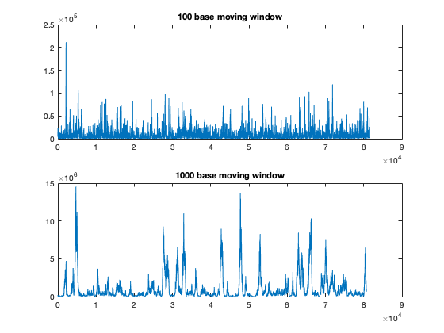

Contents
Lab 2.3.1
clc;close all;clear; hbb = getgenbank("NG_000007.3"); % 1. Make a function called threebasefreq_stft.m that can be called like this: % Threebaseperiodicity_vs_position = threebasefreq_stft (DNA_SEQUENCE, WINDOW_LENGTH, NFFT) % see "Functions for the Lab" section % 2. After you implement your function, test it on the whole 81,706 bp sequence of the HBB gene. Show % two plots of the results (similar to the figure in Hint 5 ) by using a) threebasefreq_stft(seq,100,1024) % and b) threebasefreq_stft(seq,1000,1024). threebase_100 = threebasefreq_stft(hbb.Sequence, 100, 1024); threebase_1000 = threebasefreq_stft(hbb.Sequence, 1000, 1024); subplot(2, 1, 1) plot(threebase_100) title("100 base moving window") subplot(2, 1, 2) plot(threebase_1000) title("1000 base moving window") % 3. Compare and contrast your results. Include all Matlab codes in your report. % Looking at the output from the two moving window periods shows some % differing results. The results using a 100 base moving window does not % show any clear pattern that centers around the expected exon positions % for this gene. However, the results from the 1000 base moving window % showed expected trends around the exon positions for the hbb gene. There % were a few positions that showed elevated
Warning: The record NG_000007.3 has been replaced by NG_000007. Returning record 28380636.
Functions for the Lab
This function corresponds to Lab 2.2.1 #3 and returns the coding and non-coding regions of the input sequence in a struct object with coding and non_coding character arrays
function output = get_coding(seq, indices) num_indices = length(indices); coding = repelem("a", num_indices/2); non_coding = repelem("a", (num_indices/2)-1); n_code = 1; n_non_code = 1; for i = 1:num_indices-1 if mod(i,2) == 1 coding(n_code) = seq(indices(i):indices(i+1)); n_code = n_code + 1; else non_coding(n_non_code) = seq(indices(i)+1:indices(i+1)-1); n_non_code = n_non_code+1; end end output.coding = coding; output.non_coding = non_coding; end % This function is for Lab 2.2.2 and 2.2.3 % It takes the character string and looks at each of the bases and % determines if it matches the specified base function output = is_base(seq, base) seq_length = length(seq); out_binary = repelem(0, seq_length); for i = 1:seq_length if seq(i) == base out_binary(i) = 1; else out_binary(i) = 0; end end output = out_binary; end % 1. Assume that the windows have full overlap meaning that each window of WINDOW_LENGTH % overlaps by WINDOW_LENGTH ? 1 data points: % 2. DNA_SEQUENCE is the DNA sequence of letters (before the binary indicator operation). % 3. NFFT is the number of points to take in the Fourier transform. % 4. The output will give you the magnitude of the N/3 % point for each position (or consecutive window) in the sequence. function output = threebasefreq_stft(seq, window_length, nfft) % calculate the sequence length seq_length = length(seq); % create a vector that is preallocated to the length of the expected output fft_vec = repelem(0, seq_length-window_length); for i = 1:seq_length-window_length % create a sub sequence sub_seq = seq(i:i+window_length); % calculate the u[base] for each of the bases sub_a = is_base(sub_seq, "a"); sub_t = is_base(sub_seq, "t"); sub_c = is_base(sub_seq, "c"); sub_g = is_base(sub_seq, "g"); % calculate the fft sub_ft = abs(fft(sub_a, nfft)).^2 + abs(fft(sub_t, nfft)).^2 + ... abs(fft(sub_c, nfft)).^2 + abs(fft(sub_g, nfft)).^2; % find the nfft/3 nfft_3 = sub_ft(round(nfft/3)); % square the result to make the effect more clear and put it into the % output vector fft_vec(i) = nfft_3^2; end % assign the output vector output = fft_vec; end